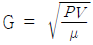
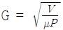
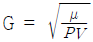
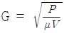
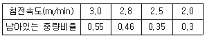
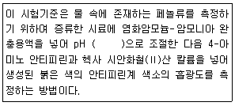
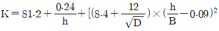
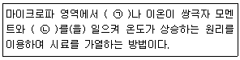
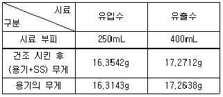
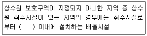

수질환경산업기사 (2019-03-03 기출문제)
1과목: 수질오염개론
1. Na+ 460mg/L, Ca2+ 200mg/L, Mg2+ 264mg/L인 농업용수가 있을 때 SAR의 값은? (단, 원자량 Na = 23, Ca = 40, Mg= 24)
- 4
- 5
- 6
- 7
(정답률: 63%)

2. 수산화나트륨 30g을 증류수에 넣어 1.5L로 하였을 때 규정농도(N)는? (단, Na의 원자량 = 23)
- 0.5
- 1.0
- 1.5
- 2.0
(정답률: 73%)
3. 산소전달의 환경인자에 관한 설명으로 옳은 것은?
- 수온이 높을수록 증가한다.
- 압력이 낮을수록 산소의 용해율은 증가한다.
- 염분 농도가 높을수록 산소의 용해율은 증가한다.
- 현존의 수중 DO농도가 낮을수록 산소의 용해율은 증가한다.
(정답률: 65%)
4. 깊은 호수나 저수지에 수직방향의 물 운동이 없을 때 생기는 성층현상의 성층 구분을 수표면에서부터 순서대로 나열한 것은?
- Epilimnion → Thermocline → Hypolimnion → 침전물층
- Epilimnion → Hypolimnion → Thermocline → 침전물층
- Hypolimnion → Thermocline → Epilimnion → 침전물층
- Hypolimnion → Epilimnion → Thermocline → 침전물층
(정답률: 70%)
5. 오수 미생물 중에서 유황화합물을 산화하여 균체 내 또는 균체 외에 유황입자를 축적하는 것은?
- Zoogloea
- Sphaerotilus
- Beggiatoa
- Crenothrix
(정답률: 67%)
6. 회복지대의 특성에 대한 설명으로 옳지 않은 것은? (단, Whipple의 하천정화단계 기준)
- 용존산소량이 증가함에 따라 질산염과 아질산염의 농도가 감소한다.
- 혐기성균이 호기성균으로 대체되며 Fungi도 조금씩 발생한다.
- 광합성을 하는 조류가 번식하고 원생동물, 윤충, 갑각류가 번식한다.
- 바닥에는 조개나 벌레의 유충이 번식하며 오염에 견디는 힘이 강한 은빛 담수어 등의 물고기도 서식한다.
(정답률: 66%)
7. 10-3mol CH3COOH의 pH는? (단, CH3COOH의 pKa =10-4.76) (문제 오류로 실제 시험에서는 모두 정답처리 되었습니다. 여기서는 1번을 누르면 정답 처리 됩니다.)
- 3.0
- 3.9
- 5.0
- 5.9
(정답률: 75%)
8. 50℃에서 순수한 물 1L의 몰농도(mol/L)는? (단, 50℃의 물의 밀도 = 0.9881g/mL)
- 33.6
- 54.9
- 98.9
- 109.8
(정답률: 67%)
9. 대장균군에 관한 설명으로 틀린 것은?
- 인축의 내장에 서식하므로 소화기계 전염병원균의 존재 추정이 가능하다.
- 병원균에 비해 물속에서 오래 생존한다.
- 병원균보다 저항력이 강하다.
- Virus보다 소독에 대한 저항력이 강하다.
(정답률: 83%)
10. 에너지원으로 빛을 이용하며 유기탄소를 탄소원으로 이용하는 미생물군은?
- 광합성 독립영양 미생물
- 화학합성 독립영양 미생물
- 광합성 종속영양 미생물
- 화학합성 종속영양 미생물
(정답률: 65%)
11. Bacteria(C5H7O2N) 18g의 이론적인 COD(g)는? (단, 질소는 암모니아로 분해됨을 기준)
- 약 25.5
- 약 28.8
- 약 32.3
- 약 37.5
(정답률: 63%)
12. 수질 모델 중 Streeter & Phelps 모델에 관한 내용으로 옳은 것은?
- 하천을 완전혼합흐름으로 가정하였다.
- 점오염원이 아닌 비점오염원으로 오염부하량을 고려한다.
- 유속, 수심, 조도계수에 의해 확산계수를 결정한다.
- 유기물의 분해와 재폭기만을 고려하였다.
(정답률: 56%)
13. pH가 3~5정도의 영역인 폐수에서도 잘 생장하는 미생물은?
- Fungi
- Bacteria
- Algae
- Protozoa
(정답률: 76%)
14. 우리나라에서 주로 설치·사용되어진 분뇨정화조의 형태로 가장 적합하게 짝지어진 것은?
- 임호프탱크 - 부패탱크
- 접촉포기법 - 접촉안정법
- 부패탱크 - 접촉포기법
- 임호프탱크 - 접촉포기법
(정답률: 74%)
15. 임의의 시간 후의 용존산소부족량(용존산소곡선식)을 구하기 위해 필요한 기본인자와 가장 거리가 먼 것은?
- 재포기계수
- BODu
- 수심
- 탈산소계수
(정답률: 79%)
16. 실험용 물고기에 독성물질을 경구투입 시 실험대상 물고기의 50%가 죽는 농도를 나타낸 것은?
- LC50
- TLm
- LD50,
- BIP
(정답률: 82%)
17. 산성폐수에 NaOH 0.7%용액 150mL를 사용하여 중화하였다. 같은 산성폐수 중화에 Ca(OH)2 0.7%용액을 사용한다면 필요한 Ca(OH)2 용액(mL)은? (단, 원자량 Na = 23, Ca = 40, 폐수 비중 = 1.0)
- 약 207
- 약 139
- 약 92
- 약 81
(정답률: 54%)
18. 적조현상과 관계가 가장 적은 것은?
- 해류의 정체
- 염분농도의 증가
- 수온의 상승
- 영양염류의 증가
(정답률: 77%)
19. 유해물질, 오염발생원과 인간에 미치는 영향에 대하여 틀리게 짝지어진 것은?
- 구리 – 도금공장, 파이프제조업 - 만성중독 시 간경변
- 시안 – 아연제련공장, 인쇄공업 – 파킨슨씨병 증상
- PCB – 변압기, 콘덴서 공장 - 카네미유증
- 비소 – 광산정련공업, 피혁공업 – 피부흑색(청색)화
(정답률: 68%)
20. 물의 물리적 특성을 나타내는 용어와 단위가 틀린 것은?
- 밀도 – g/cm3
- 표면장력 – dyne/cm2
- 압력 – dyne/cm2
- 열전도도 – cal/cm·sec·℃
(정답률: 74%)
2과목: 수질오염방지기술
21. 염산 18.25g을 중화시킬 때 필요한 수산화칼슘의 양(g)은? (단, 원자량 Cl = 35.5, Ca = 40)
- 18.5
- 24.5
- 37.5
- 44.5
(정답률: 53%)
22. 125m3/hr의 폐수가 유입되는 침전지의 월류 부하가 100m3/m·day일 때, 침전지의 월류위어의 유효길이(m)는?
- 10
- 20
- 30
- 40
(정답률: 67%)
23. 물 25.2g에 글루코오스(C6H12O6)가 4.57g녹아 있는 용액의 몰랄 농도(m)는? (단, C6H12O6 분자량 = 180.2)
- 약 1.0
- 약 2.0
- 약 3.0
- 약 4.0
(정답률: 45%)
24. 물의 혼합 정도를 나타내는 속도 경사 G를 구하는 공식은? (단, μ : 물의 점성 계수, V : 반응조 체적, P : 동력)




(정답률: 81%)
25. 정수처리를 위하여 막여과 시설을 설치하였을 때 막모듈의 파울링에 해당하는 내용은?
- 장기적인 압력 부하에 의한 막 구조의 압밀화(Creep변형)
- 건조나 수축으로 인한 막 구조의 비가역적인 변화
- 막의 다공질부의 흡착, 석출, 포착 등에 의한 폐색
- 원수 중의 고형물이나 진동에 의한 막 면의 상처나 마모, 파단
(정답률: 56%)
26. BOD농도가 2,000mg/L이고 폐수배출량이 1,000m3/day인 산업폐수를 BOD부하량이 500kg/day로 될 때까지 감소시키기 위해 필요한 BOD제거효율(%)은?
- 70
- 75
- 80
- 85
(정답률: 60%)
27. 20,000명이 거주하는 소도시에 하수처리장이 있으며 처리효율은 60%라 한다. 평균 유량 0.2m3/sec인 하천에 하수처리장의 유출수가 유입되어 BOD농도가 12mg/L였다면, 이 경우의 BOD유출율(%)은? (단, 인구 1인당 BOD 발생량 = 50g/day)
- 52
- 62
- 72
- 82
(정답률: 33%)
28. 슬러지 농축방법 중 부상식 농축에 관한 내용으로 옳지 않은 것은?
- 소요면적이 크며 악취 문제 발생
- 잉여슬러지에 효과적임
- 실내에 설치 시 부식 방지
- 약품 주입 없이도 운전 가능
(정답률: 57%)
29. 침전지로 유입되는 부유물질의 침전속도 분포가 다음 표와 같다. 표면적 부하가 4,032m3/m2·day일 때 전체 제거효율(%)은?

- 74
- 64
- 54
- 44
(정답률: 53%)
30. 축산폐수 처리에 대한 설명으로 옳지 않은 것은?
- BOD농도가 높아 생물학적 처리가 효과적이다.
- 호기성 처리공정과 혐기성 처리공정을 조합하면 효과적이다.
- 돈사폐수의 유기물 농도는 돈사형태와 유지관리에 따라 크게 변한다.
- COD농도가 매우 높아 화학적으로 처리하면 경제적이고 효과적이다.
(정답률: 72%)
31. 오염물질의 농도가 200mg/L이고 반응 2시간 후의 농도가 20mg/L로 되었다. 1시간 후의 반응물질의 농도(mg/L)는? (단, 반응속도는 1차반응, Base는 상용대수)
- 28.6
- 32.5
- 63.2
- 93.8
(정답률: 63%)
32. 물 5m3의 DO가 9.0mg/L이다. 이 산소를 제거하는 데 이론적으로 필요한 아황산나트륨(Na2SO3)의 양(g)은? (단, Na원자량 = 23)
- 약 355
- 약 385
- 약 402
- 약 429
(정답률: 49%)
33. 하수 슬러지의 농축 방법별 특징으로 옳지 않은 것은?
- 중력식 : 잉여슬러지의 농축에 부적합
- 부상식 : 악취문제가 발생함
- 원심분리식 : 악취가 적음
- 중력벨트식 : 별도의 세정장치가 필요 없음
(정답률: 69%)
34. 비교적 일정한 유량을 폐수처리장에 공급하기 위한 것으로, 예비처리시설 다음에 설치되는 시설은?
- 균등조
- 침사조
- 스크린조
- 침전조
(정답률: 76%)
35. 생물학적 하수 고도처리공법인 A/O공법에 대한 설명으로 틀린 것은?
- 사상성 미생물에 의한 벌킹이 억제되는 효과가 있다.
- 표준활성슬러지법의 반응조 전반 20~40%정도를 혐기반 응조로 하는 것이 표준이다.
- 혐기반응조에서 탈질이 주로 이루어진다.
- 처리수의 BOD 및 SS농도를 표준 활성슬러지법과 동등하게 처리할 수 있다.
(정답률: 57%)
36. 분리막을 이용한 수처리 방법과 구동력의 관계로 틀린 것은?
- 역삼투 - 농도차
- 정밀여과 - 정수압차
- 전기투석 - 전위차
- 한외여과 - 정수압차
(정답률: 63%)
37. 하수처리 시 활성슬러지법과 비교한 생물막법(회전원판법)의 단점으로 볼 수 없는 것은?
- 활성슬러지법과 비교하면 이차침전지로부터 미세한 SS가 유출되기 쉽다.
- 처리과정에서 질산화 반응이 진행되기 쉽고 이에 따라 처리수의 pH가 낮아지게 되거나 BOD가 높게 유출될 수 있다.
- 생물막법은 운전관리 조작이 간단하지만 운전조작의 유연성에 결점이 있어 문제가 발생할 경우에 운전방법의 변경 등 적절한 대처가 곤란하다.
- 반응조를 다단화하기 어려워 처리의 안정성이 떨어진다.
(정답률: 54%)
38. 임호프 탱크의 구성요소가 아닌 것은?
- 응집실
- 스컴실
- 소화실
- 침전실
(정답률: 52%)
39. 직경이 1.0mm이고 비중이 2.0인 입자를 17℃의 물에 넣었다. 입자가 3m 침강하는 데 걸리는 시간(sec)은? (단, 17℃일 때 물의 점성계수 = 1.089×10-3kg/m·sec, Stokes 침강이론 기준)
- 6
- 16
- 38
- 56
(정답률: 48%)
40. 유기성 콜로이드가 다량 함유된 폐수의 처리방법으로 옳지 않은 것은?
- 중력침전법
- 응집침전법
- 활성슬러지법
- 살수여상법
(정답률: 45%)
3과목: 수질오염공정시험방법
41. 노말헥산 추출물질시험법에서 염산(1+1)으로 산성화할 때 넣어주는 지시약과 pH로 옳은 것은?
- 메틸레드 – pH 4.0 이하
- 메틸오렌지 – pH 4.0 이하
- 메틸레드 – pH 2.0 이하
- 메틸오렌지 – pH 2.0 이하
(정답률: 76%)
42. 다음 중 질산성 질소 분석 방법이 아닌 것은?
- 이온크로마토그래피법
- 자외선/가시선 분광법(부루신법)
- 자외선/가시선 분광법(활성탄흡착법)
- 카드뮴 환원법
(정답률: 57%)
43. 수질오염 공정시험 기준상 6가 크롬을 측정하는 방법이 아닌 것은?
- 원자흡수분광광도법
- 진콘법
- 유도결합플라스마-원자발광분광법
- 자외선/가시선 분광법
(정답률: 65%)
44. 화학적 산소 요구량(CODMn)에 대한 설명으로 틀린 것은?
- 시료량은 가열 반응 후에 0.025N 과망간산 칼륨용액의 소모량이 70~90%가 남도록 취한다.
- 시료의 COD값이 10mg/L 이하일 때는 시료 100mL를 취하여 그대로 실험한다.
- 수욕중에서 30분보다 더 가열하면 COD 값은 증가한다.
- 황산은 분말 1g 대신 질산은 용액(20%) 5mL 또는 질산은 분말 1g을 첨가해도 좋다.
(정답률: 40%)
45. 페놀류를 자외선/가시선 분광법을 적용하여 분석할 때에 관한 내용으로 ( )에 옳은 것은?

- 8
- 9
- 10
- 11
(정답률: 55%)
46. 클로로필 a 측정 시 클로로필 색소를 추출하는 데 사용되는 용액은?
- 아세톤(1+9) 용액
- 아세톤(9+1) 용액
- 에틸 알콜(1+9) 용액
- 에틸 알콜(9+1) 용액
(정답률: 58%)
47. 자외선/가시선 분광법에 의한 음이온계면활성제 측정 시메틸렌블루와 반응시켜 생성된 착화합물의 추출용매로 가장 적절한 것은?
- 디티존사염화탄소
- 클로로폼
- 트리클로로에틸렌
- 노말헥산
(정답률: 52%)
48. 원자흡수분광광도계의 구성 요소가 아닌 것은?
- 속빈음극램프
- 전자포획형검출기
- 예혼합버너
- 분무기
(정답률: 49%)
49. 개수로에 의한 유량측정 시 평균유속은 Chezy의 유속 공식을 적용한다. 여기서 경심에 대한 설명으로 옳은 것은?
- 유수 단면적을 윤변으로 나눈 것을 말한다.
- 윤변에서 유수 단면적을 뺀 것을 말한다.
- 윤변과 유수 단면적을 곱한 것을 말한다.
- 윤변과 유수 단면적을 더한 것을 말한다.
(정답률: 67%)
50. 다음 조건으로 계산된 직각 삼각 위어의 유량(m3/min)은? (단, 유량 계수

] 단, D = 0.25m, B = 0.8m, h = 0.1m)- 약 0.26
- 약 0.52
- 약 1.04
- 약 2.08
(정답률: 49%)
51. 측정시료 채취 시 유리 용기 만을 사용해야 하는 항목은?
- 불소
- 유기인
- 알킬수은
- 시안
(정답률: 54%)
52. 항목별 시료 보존방법에 관한 설명으로 틀린 것은?
- 아질산성 질소 함유 시료는 4℃에서 보관한다.
- 인산염인 함유 시료는 즉시 여과한 후 4℃에서 보관한다.
- 클로로필a 함유 시료는 즉시 여과한 후 –20℃ 이하에서 보관한다.
- 불소 함유 시료는 6℃ 이하, 현장에서 멸균된 여과지로 여과하여 보관한다.
(정답률: 49%)
53. 총인의 측정법 중 아스코르빈산 환원법에 관한 설명으로 맞는 것은?
- 220nm에서 시료 용액의 흡광도를 측정한다.
- 다량의 유기물을 함유한 시료는 과황산칼륨 분해법을 사용하여 전처리한다.
- 전처리한 시료의 상등액이 탁할 경우에는 염산 주입 후 가열한다.
- 정량한계는 0.0⑤mg/L이다.
(정답률: 52%)
54. 시안(자외선/가시선 분광법) 분석에 관한 설명으로 틀린 것은?
- 각 시안 화합물의 종류를 구분하여 정량할 수 없다.
- 황화합물이 함유된 시료는 아세트산나트륨 용액을 넣어 제거한다.
- 시료에 다량의 유지류를 포함한 경우 노말헥산 또는 클로로폼으로 추출하여 제거한다.
- 정량한계는 0.01mg/L이다.
(정답률: 35%)
55. 농도 표시에 관한 설명 중 틀린 것은?
- 백만분율(ppm, parts per million)을 표시할 때는 mg/L, mg/kg의 기호를 쓴다.
- 기체 중의 농도는 표준상태(20℃, 1기압)로 환산 표시한다.
- 용액의 농도를 “%”로만 표시할 때는 W/V %의 기호를 쓴다.
- 천분율(ppt, parts per thousand)을 표시할 때는 g/L, g/kg의 기호를 쓴다.
(정답률: 55%)
56. 마이크로파에 의한 유기물 분해 원리로 ( )에 알맞은 내용은?

- ㉠ 전자, ㉡ 분자결합
- ㉠ 전자, ㉡ 충돌
- ㉠ 극성 분자, ㉡ 이온전도
- ㉠ 극성 분자, ㉡ 해리
(정답률: 47%)
57. 하수처리장의 SS제거에 대한 다음과 같은 분석결과를 얻었을 때 SS 제거효율(%)은?

- 약 96.5
- 약 94.5
- 약 92.5
- 약 88.5
(정답률: 48%)
58. 불소의 분석 방법이 아닌 것은?
- 자외선/가시선 분광법
- 이온전극법
- 액체크로마토그래피법
- 이온크로마토그래피법
(정답률: 55%)
59. 적정법을 이용한 염소이온의 측정 시 적정의 종말점으로 옳은 것은?
- 엷은 적황색 침전이 나타날 때
- 엷은 적갈색 침전이 나타날 때
- 엷은 청록색 침전이 나타날 때
- 엷은 담적색 침전이 나타날 때
(정답률: 57%)
60. 원자흡수분광광도계의 광원으로 보통 사용되는 것은?
- 열음극램프
- 속빈음극램프
- 중수소램프
- 텅스텐램프
(정답률: 56%)
4과목: 수질환경관계법규
61. 물환경보전법상 초과부과금 부과대상이 아닌 것은?
- 망간 및 그 화합물
- 니켈 및 그 화합물
- 크롬 및 그 화합물
- 6가 크롬 화합물
(정답률: 51%)
62. 폐수무방류배출시설의 운영 기록은 최종 기록일부터 얼마 동안 보존하여야 하는가?
- 1년간
- 2년간
- 3년간
- 5년간
(정답률: 69%)
63. 음이온 계면활성제(ABS)의 하천의 수질 환경기준치는?
- 0.01 mg/L 이하
- 0.1 mg/L 이하
- 0.⑤ mg/L 이하
- 0.5 mg/L 이하
(정답률: 41%)
64. 사업장의 규모별 구분 중 1일 폐수배출량이 250m3인 사업장이 종류는?
- 제2종 사업장
- 제3종 사업장
- 제4종 사업장
- 제5종 사업장
(정답률: 72%)
65. 사업자 및 배출시설과 방지시설에 종사하는 자는 배출시설과 방지시설의 정상적인 운영, 관리를 위한 환경기술인의 업무를 방해하여서는 아니되며, 그로부터 업무수행에 필요한 요청을 받은 때에는 정당한 사유가 없는 한 이에 응하여야 한다. 이를 위반하여 환경기술인의 업무를 방해하거나 환경기술인의 요청을 정당한 사유 없이 거부한 자에 대한 벌칙 기준은?
- 100만원 이하의 벌금
- 200만원 이하의 벌금
- 300만원 이하의 벌금
- 500만원 이하의 벌금
(정답률: 69%)
66. 사업자가 환경기술인을 임명하는 목적으로 맞는 것은?
- 배출시설과 방지시설의 운영에 필요한 약품의 구매·보관에 관한 사항
- 배출시설과 방지시설의 사용개시 신고
- 배출시설과 방지시설의 등록
- 배출시설과 방지시설의 정상적인 운영·관리
(정답률: 72%)
67. 배출시설의 설치제한지역에서 폐수 무방류 배출시설의 설치가 가능한 특정 수질 유해물질이 아닌 것은?
- 구리 및 그 화합물
- 디클로로메탄
- 1,2 - 디클로로에탄
- 1,1 - 디클로로에틸렌
(정답률: 54%)
68. 공공수역에 특정 수질 유해물질 등을 누출·유출시키거나 버린 자에 대한 벌칙 기준은?
- 6개월 이하의 징역 또는 5백만원 이하의 벌금
- 1년 이하의 징역 또는 1천만원 이하의 벌금
- 3년 이하의 징역 또는 3천만원 이하의 벌금
- 5년 이하의 징역 또는 5천만원 이하의 벌금
(정답률: 51%)
69. 오염총량관리기본계획안에 첨부되어야 하는 서류가 아닌것은?
- 오염원의 자연증감에 관한 분석 자료
- 오염부하량의 산정에 사용한 자료
- 지역개발에 관한 과거와 장래의 계획에 관한 자료
- 오염총량 관리 기준에 관한 자료
(정답률: 29%)
70. 수질오염방지시설 중 생물화학적 처리 시설은?
- 흡착시설
- 혼합시설
- 폭기시설
- 살균시설
(정답률: 60%)
71. 공공폐수처리시설로서 처리용량이 1일 700m3이상인 시설에 부착해야 하는 측정기기의 종류가 아닌 것은?
- 수소이온농도(pH) 수질자동측정기기
- 부유물질량(SS) 수질자동측정기기
- 총질소(T-N) 수질자동측정기기
- 온도측정기
(정답률: 61%)
72. 폐수처리업에 종사하는 기술 요원에 대한 교육기관으로 옳은 것은?
- 한국환경공단
- 국립환경과학원
- 환경보전협회
- 국립환경인력개발원
(정답률: 71%)
73. 낚시 금지 구역에서 낚시 행위를 한 자에 대한 과태료 처분 기준은?
- 100만원 이하
- 200만원 이하
- 300만원 이하
- 500만원 이하
(정답률: 62%)
74. 환경부장관이 위법시설에 대한 폐쇄를 명하는 경우에 해당되지 않는 것은?
- 배출시설을 개선하거나 방지시설을 설치·개선하더라도 배출허용기준 이하로 내려갈 가능성이 없다고 인정되는 경우
- 배출시설의 설치 허가 및 신고를 하지 아니하고 배출시설을 설치하거나 사용한 경우
- 폐수무방류배출시설의 경우 배출시설에서 나오는 폐수가 공공수역으로 배출될 가능성이 있다고 인정되는 경우
- 배출시설 설치장소가 다른 법률의 규정에 의하여 당해 배출시설의 설치가 금지된 장소인 경우
(정답률: 42%)
75. 비점오염저감시설의 구분 중 장치형 시설이 아닌 것은?
- 여과형 시설
- 와류형 시설
- 저류형 시설
- 스크린형 시설
(정답률: 62%)
76. 폐수를 전량 위탁처리하여 방지시설의 설치면제에 해당되는 사업장은 그에 해당하는 서류를 제출하여야 한다. 다음 중 제출서류에 해당하지 않는 것은?
- 배출시설의 기능 및 공정의 설계 도면
- 폐수처리업자등과 체결한 위탁처리계약서
- 위탁처리할 폐수의 성상별 저장시설의 설치계획 및 그 도면
- 위탁처리할 폐수의 종류·양 및 수질오염물질별 농도에 대한 예측서
(정답률: 45%)
77. 환경기준에서 수은의 하천 수질 기준으로 적절한 것은? (단, 구분 : 사람의 건강보호)
- 검출 되어서는 안됨
- 0.01 mg/L 이하
- 0.02 mg/L 이하
- 0.03 mg/L 이하
(정답률: 75%)
78. 폐수배출시설의 설치허가 대상시설 범위 기준으로 맞는 것은?

- 하류로 유하거리 10킬로미터
- 하류로 유하거리 15킬로미터
- 상류로 유하거리 10킬로미터
- 상류로 유하거리 15킬로미터
(정답률: 54%)
79. 환경정책기본법령상 환경기준 중 수질 및 수생태계(해역)의 생활환경 기준으로 맞는 것은?
- 용매추출유분 : 0.01 mg/L 이하
- 총질소 : 0.3 mg/L 이하
- 총인 : 0.03 mg/L 이하
- 화학적 산소요구량 : 1 mg/L 이하
(정답률: 42%)
80. 배출시설과 방지시설의 정상적인 운영·관리를 위하여 환경기술인을 임명하지 아니한 자에 대한 과태료 처분 기준은?
- 1천만원 이하
- 300만원 이하
- 200만원 이하
- 100만원 이하
(정답률: 63%)
SAR = (460 / (200 + 264))1/2
SAR = 5
따라서, 정답은 "5"이다. 이유는 SAR 공식에 따라 계산하면 된다.